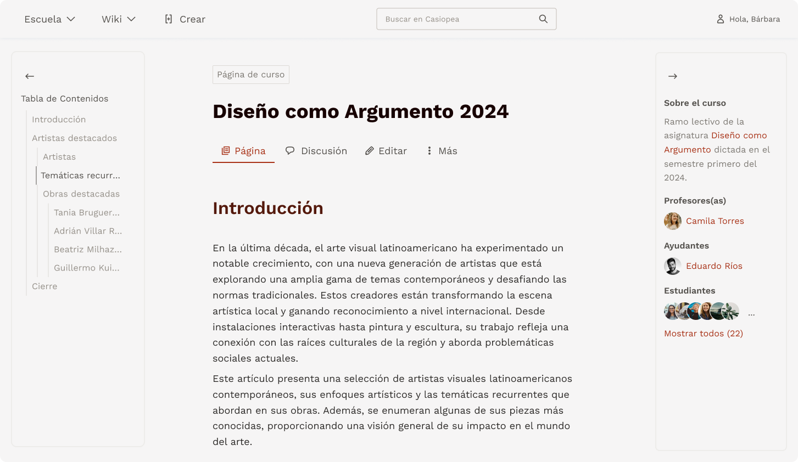

En esta página se explica la estructura y los cambios propuestos para mejorar la experiencia de navegación tanto en desktop como en dispositivos móviles.
La grilla es el sistema de distribución de los elementos en la página. Su propósito es organizar el contenido de manera clara y coherente para facilitar la navegación y la interacción con los usuarios.
Algunas propuestas para mejorar la grilla incluyen hacer la columna de contenido más angosta, evitar justificar el texto, darle mayor visibilidad a las opciones de la página y colocar la ficha y la tabla de contenido (TOC) a los costados.
Para mejorar la experiencia en dispositivos móviles, se realizaron algunos ajustes importantes. La barra de navegación se mueve al fondo de la página, la ficha de información pasa dentro del área de contenido, y la tabla de contenido (TOC) se convierte en un botón flotante. Además, se reduce el tamaño de la letra para hacer la navegación más cómoda.